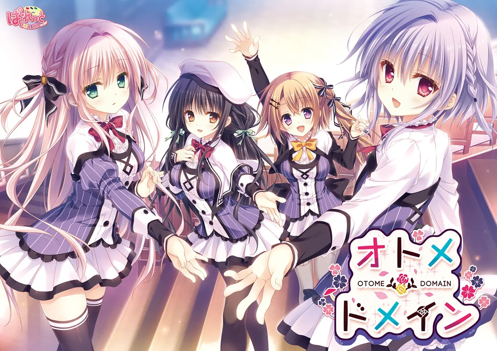

少女＊领域
PALETTE QUALIA少女＊领域是Palette品牌在2015年成立的 PALETTE QUALIA 的第一部作品。制作的消息最先于2015年8月在 Comic Market 88 上发表，宣传网页也在8月21日公开。游戏首先推出了体验版，正式版在2016年6月24日发售。五个月后于2016年11月18日又发布了视角更换补丁，能够让玩家以女主视角体验故事情节。
该游戏在萌系游戏大赏2016获得六月的话题赏，月间赏，年间排名第14名。在Getchu举办的美少女游戏大奖2016中获得绘图部门第9名、综合部门第9名，角色部门中游戏男主人公飞鸟凑获得了第1名、女主之一大垣日向获得了第16名，年销量排行中第2名。
该作品在2017年9月29日由粉菠萝社（日：ピンクパイナップル，英：pinkpineapple）改编并出版了1集时长26分钟的OVA限制级动画（R-18）。配音方面除了贵船柚子的声优从上田朱音换成了花影萤之外，其他人员都是原班人马，剧情方面为共通线+风莉线，相比原作并没有太大改动，也还原了几个重要的CG事件，所以基本没什么区别。
剧情简介
在唯一的亲人祖母过世之后，孤独的男主角飞鸟凑遇到了同样年纪但在经营女子学校的西园寺风莉。在西园寺风莉的带领下，飞鸟凑穿上了女生的制服，入读白铃女子学园并住进了女生宿舍。